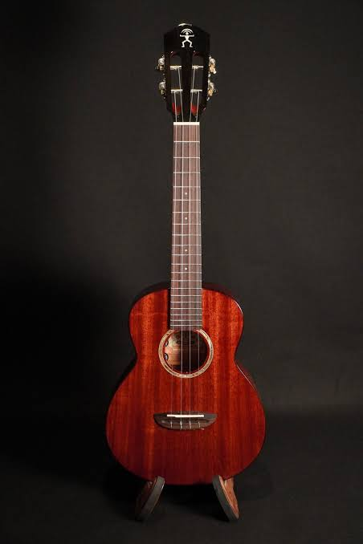

Ukulele

The ukulele is a member of the lute family of instruments, generally employing four nylon or gut strings and prized for its cheerful, portable island sound. It has surged in popularity across folk, pop, and educational settings.
Types of Ukuleles
Soprano Ukulele
The traditional and smallest size ukulele, known for its bright, classic Hawaiian treble tone.
- Price range: from $50 to $500+
Concert Ukulele
Slightly larger than the soprano with a longer scale length and deeper projection, ideal for adult hands.
- Price range: from $70 to $800+
Tenor Ukulele
A larger ukulele favoured by stage performers, offering richer bass response and sustain.
- Price range: from $100 to $1,500+
Baritone Ukulele
The largest ukulele type, tuned lower (D-G-B-E) matching the top four strings of a classical guitar.
- Price range: from $120 to $1,200+
Popular Brands
- Kamaka
- Martin
- Kala
- Cordoba
- KoAloha